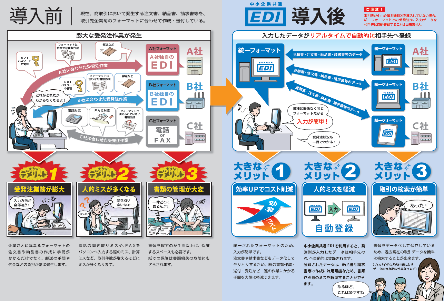

feature article
特集記事
中小企業共通EDI
中小企業共通EDI Ver3.0の公表（2020年4月）
受発注業務における業種の垣根を越えた企業間取引データ連携システム
銀行口座への送受金の情報と受発注の情報が連携も可能であり、ZEDIへも対応している。また、データが標準化されているため、過去の受発注の情報をビッグデータとして経営に利活用することも可能であり、経営管理上からも有用である。
※中小企業共通EDI標準ver.4バージョンアップの公開と意見公募
2022年7月15日（金）～8月15日（月）17時
特定非営利活動法人ITコーディネータ協会では、デジタルインボイスへの対応を中心とした、中小企業共通EDI標準ver.4へのバージョンアップを公開し、意見公募を行っています。
https://www.itc.or.jp/datarenkei/publiccomment_edi_ver4.html

※中小企業庁作成パンフレット
https://www.chusho.meti.go.jp/keiei/gijut/2018/180514pamfletEDI.pdf
 こちらから!!
こちらから!!